HORAS
Sejarah
Partuturan
Budaya
Rumah Adat
Pakaian Adat
Senjata Tradisional
Alat Musik
Makanan Khas
Alat Musik Suku Batak
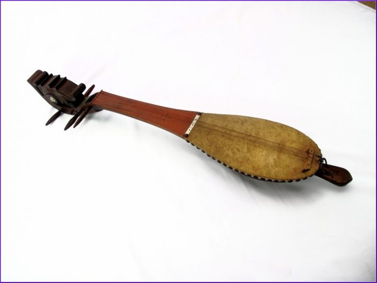
Alat Musik Hasapi
Lihat
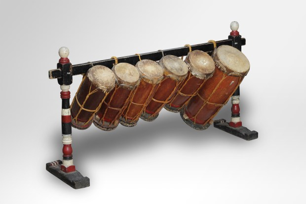
Alat Musik Taganing
Lihat
Alat Musik Odap
Lihat
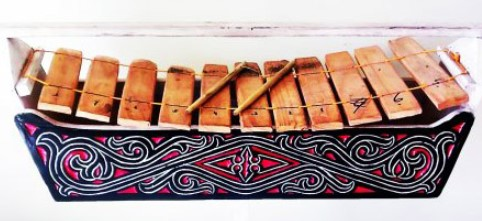
Alat Musik Garantung
Lihat
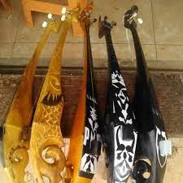
Alat Musik Kulcapi Karo
Lihat
Alat Musik Gendang Singanaki
Lihat
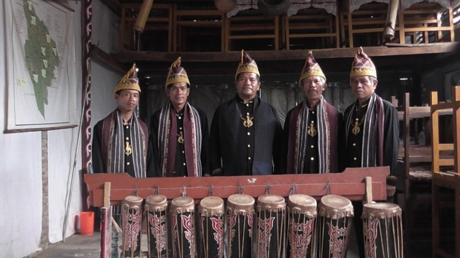
Alat Musik Gendang Sisibah
Lihat
Alat Musik Sarune Bolon
Lihat
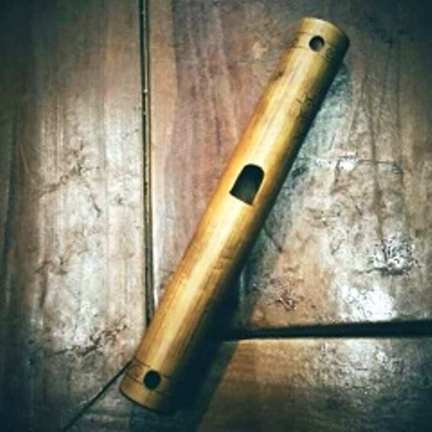
Alat Musik Tulila/Talatoit
Lihat
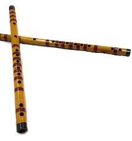
Alat Musik Sordam
Lihat
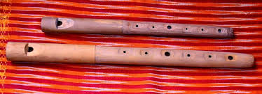
Alat Musik Balobat
Lihat
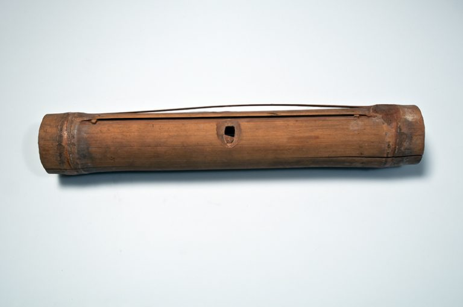
Alat Musik Keteng-Keteng
Lihat
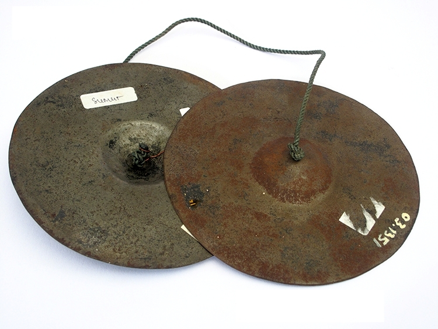
Tali Sasayat/Sitalasayak
Lihat
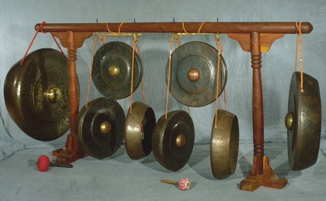
Alat Musik Ogung
Lihat
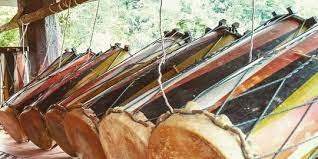
Alat Musik Gordang Sambilan
Lihat